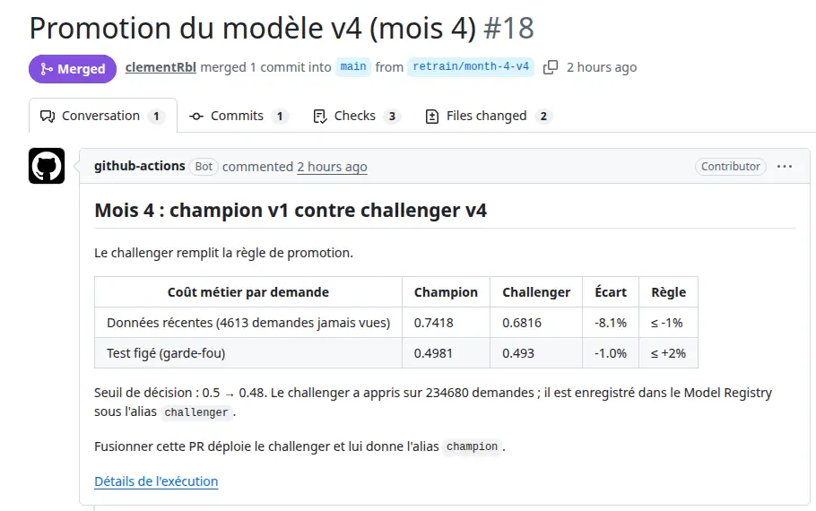
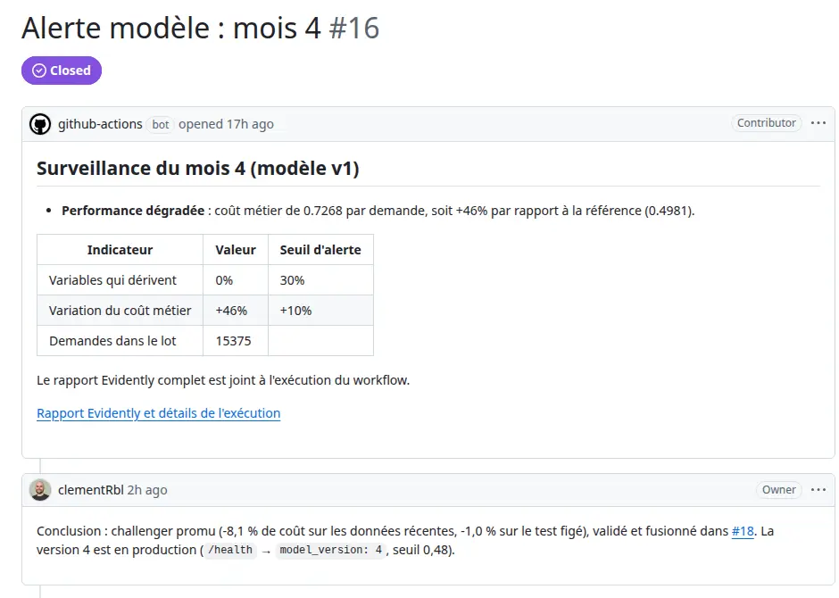
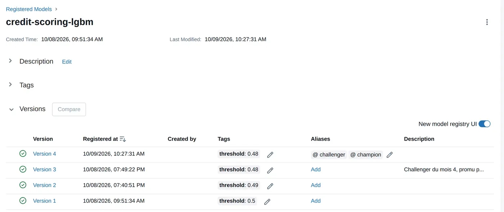
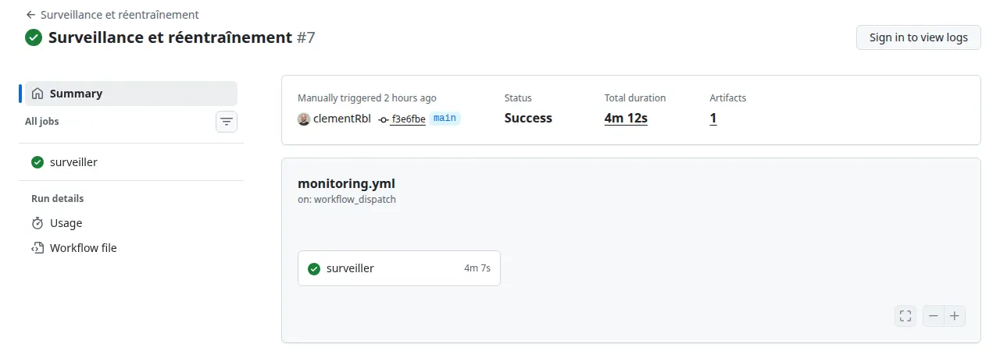

Rapport de conduite de projet AI Engineering
De quoi il s’agit. Ce document raconte comment j’ai mené mon projet personnel technique, du besoin jusqu’à la production : la V2 de Credit Scoring MLOps, qui surveille un modèle de crédit chaque semaine, le réentraîne quand il dérive et ne le remplace qu’après validation humaine. Tout ce qui est décrit a réellement tourné, et chaque chiffre renvoie à une exécution, une issue ou une Pull Request publique.
Pourquoi le lire. Le code montre ce que je sais faire ; ce rapport montre comment je décide, ce que j’écarte et pourquoi. Comptez une vingtaine de minutes, ou parcourez les tableaux, qui portent l’essentiel des arbitrages. Les termes techniques soulignés ainsi mènent à leur définition dans le glossaire.
← Le portfolio Le glossaire Le code du projet L’API en production Le registre des modèles
Surveillance et réentraînement automatiques d’un modèle de scoring crédit
| Auteur | Clément Reboul, AI Engineer |
| Projet personnel technique | Credit Scoring MLOps, V2 : boucle dérive → réentraînement → promotion |
| Dépôt GitHub | https://github.com/clementRbl/credit-scoring-mlops |
| API en production | https://clementrbl-credit-scoring-api.hf.space/docs |
| Registre des modèles (MLflow) | https://dagshub.com/clementRbl/credit-scoring-mlops.mlflow |
| Portfolio | https://clement-reboul.fr/portfolio/ |
| Période | V1 : mars à septembre 2026 · V2 : 8 et 9 octobre 2026 |
Résumé
Prêt à Dépenser accorde des crédits à des clients qui ont peu d’historique bancaire. Un modèle LightGBM estime leur probabilité de défaut ; un seuil transforme cette probabilité en décision d’octroi. La première version du projet (V1) a mis ce modèle en production : API FastAPI conteneurisée, déploiement continu sur Hugging Face Spaces, journalisation des prédictions, analyse de dérive dans un notebook.
Cette V1 avait une faiblesse de fond : le modèle pouvait se dégrader sans que personne le sache. La surveillance s’arrêtait à un notebook qu’il fallait relancer à la main, rien ne réentraînait le modèle, et ni les données ni les modèles n’étaient versionnés.
La V2, objet de ce rapport, ferme la boucle. Chaque semaine, un workflow surveille le dernier lot mensuel de demandes. En cas de dérive des données ou de hausse du coût métier, il ouvre une alerte, réentraîne un modèle candidat (le challenger), le compare au modèle en service (le champion) et, si une règle chiffrée est remplie, propose sa mise en production dans une Pull Request. Un humain valide : c’est une décision de crédit.
J’ai fait tourner la boucle de bout en bout sur quatre mois simulés, avec les vrais services (GitHub Actions, DagsHub, Hugging Face). Au mois 3, une clientèle plus jeune déclenche une alerte de dérive, mais aucune promotion : réentraîner n’apportait rien. Au mois 4, un choc de défauts invisible pour les tests de dérive des données fait monter le coût de 46 % ; le challenger le réduit de 8,1 % sur des données qu’il n’a jamais vues et passe en production après validation. Coût d’infrastructure : 0 €.
Le rapport suit le modèle de conduite de projet AI Engineering : besoins (1), audit de l’existant (2), solution cible (3), mise en œuvre et aide à la décision (4), pilotage (5), conclusion (6) et annexes (7).
1. Contexte et analyse des besoins
1.1 Présentation de l’organisation et du contexte
| Secteur | Crédit à la consommation, clientèle peu ou pas bancarisée |
| Enjeu métier | Décider vite et de façon justifiable ; un défaut coûte environ dix fois un bon client refusé |
| Données | Jeu Home Credit : 307 511 demandes étiquetées (8,07 % de défauts), 255 variables après agrégation de 7 tables |
| Maturité IA | Un modèle en production, servi par API, avec déploiement continu (V1) |
| Maturité MLOps | Niveau 0 à 1 : le service est automatisé, mais l’entraînement, la surveillance et la mise à jour du modèle sont manuels |
| Contraintes | Budget d’infrastructure nul (POC), décision explicable, données anonymisées, secteur régulé |
Les niveaux de maturité MLOps couramment utilisés vont de 0 (tout est manuel) à 2 (entraînement, tests et déploiement automatisés de bout en bout). La V1 automatisait le déploiement du service, pas le cycle de vie du modèle. L’objectif de la V2 est d’atteindre le niveau 1 : un réentraînement déclenché par la surveillance, avec une mise en production gouvernée.
Contexte réglementaire. Le scoring de crédit fait partie des systèmes d’IA classés « à haut risque » par le règlement européen sur l’IA. Le règlement impose une supervision humaine, la traçabilité des décisions et des modèles, et une documentation des données. Ces exigences ont orienté deux choix : la promotion par Pull Request validée par un humain, et le versionnage systématique des données et des modèles.
1.2 Collecte et analyse du besoin métier
Méthode de recueil. Le contexte est une mise en situation : il n’y avait pas d’utilisateurs réels à interroger. J’ai établi le besoin à partir de trois sources :
- les limites de la V1, listées dans son rapport : surveillance manuelle, pas de réentraînement, pas de validation des entrées, journal non persistant ;
- le cahier des charges du projet final : cycle de vie du modèle, réentraînement automatique, suivi des dérives, versionnage des données et des modèles ;
- un document de cadrage, écrit avant tout code (besoin, critères d’acceptation vérifiables, hors périmètre, métrique), puis un backlog d’issues GitHub.
Parties prenantes.
| Partie prenante | Attente | Ce que la V2 lui apporte |
|---|---|---|
| Chargés d’études crédit | Un score fiable dans la durée | Un modèle surveillé chaque semaine |
| Direction des risques | Savoir quand le modèle se trompe davantage, garder la main sur ce qui part en production | Alertes chiffrées en coût métier, promotion par validation humaine |
| Équipe data | Savoir sur quelles données un modèle a été entraîné | Données versionnées (DVC), modèles versionnés (Registry) |
| Conformité | Traçabilité, supervision humaine | Historique des versions, des alertes et des décisions de promotion |
| Exploitation | Un processus qui tourne sans intervention | Workflow planifié, alertes dans l’outil de suivi existant |
Objectifs.
- Métier : détecter une dégradation en moins d’une semaine et la corriger sans dégrader le passé.
- Technique : automatiser surveillance et réentraînement, versionner données et modèles, garder la mise en production sous contrôle humain.
Contraintes. Coût d’infrastructure nul, aucune donnée personnelle, aucun secret dans le code, échéance fixe (soutenance du 20 octobre).
Hiérarchisation des besoins (impact / effort).
| Besoin | Impact | Effort | Décision |
|---|---|---|---|
| Alerte automatique en cas de dérive | Fort | Faible | Retenu, gain rapide |
| Seuil de décision porté par le modèle | Fort | Faible | Retenu, prérequis du réentraînement |
| Versionnage des données et des modèles | Fort | Moyen | Retenu |
| Réentraînement et promotion gouvernée | Fort | Moyen | Retenu, cœur du projet |
| Journal de production persistant | Moyen | Moyen | Reporté (limite assumée) |
| Validation des données en entrée | Moyen | Moyen | Reporté |
| Test de charge de l’API | Faible ici | Moyen | Reporté : quelques requêtes par jour |
| Magasin de variables, tests A/B | Moyen | Fort | Hors périmètre |
2. Audit de la solution existante (V1)
2.1 Solution actuelle
| Brique | Outil | Rôle |
|---|---|---|
| Modélisation | LightGBM, scikit-learn, SHAP, MLflow (local) | 5 modèles comparés, coût métier, seuil optimisé (0,47), explicabilité |
| Service | FastAPI, Docker | POST /predict, GET /health, documentation Swagger, environ 6 ms par prédiction |
| Déploiement | GitHub Actions → Hugging Face Spaces | test → build → deploy à chaque push |
| Sécurité | slowapi, CORS, en-têtes | 20 requêtes/min sur /predict, origines limitées, aucune trace d’erreur exposée |
| Surveillance | JSONL, Evidently (notebook), Streamlit (local) | Analyse de dérive ponctuelle, tableau de bord à lancer soi-même |
Dans la V1, j’avais testé puis écarté la conversion ONNX du modèle (−39 % de taille, +6 % de vitesse) : elle imposait un pré-encodage des variables catégorielles, source d’erreurs silencieuses. En production, la fiabilité prime sur une micro-optimisation.
2.2 Évaluation de l’adéquation aux besoins
| Critère | Constat sur la V1 | Écart |
|---|---|---|
| Performance | AUC ≈ 0,78 en validation croisée, coût métier minimisé | ✅ Adéquat |
| Robustesse | 14 tests automatisés, API couverte à 96 %, CI bloquante | ✅ Adéquat |
| Sécurité | Limitation de débit, CORS restreint, en-têtes de sécurité | ✅ Adéquat pour un POC |
| Coût | 0 € d’infrastructure | ✅ Adéquat |
| Surveillance | Notebook à relancer à la main, aucune alerte | ❌ Une dégradation passe inaperçue |
| Maintenance du modèle | Aucun réentraînement ; seuil 0,47 écrit en dur dans l’API | ❌ Un nouveau modèle serait servi avec un seuil faux |
| Traçabilité | Données non versionnées ; MLflow local, dans un autre dépôt | ❌ Impossible de dire sur quoi un modèle a appris |
| Persistance du journal | Fichier local au conteneur, perdu au redémarrage | ⚠️ Reporté |
Un écart moins visible, découvert pendant l’audit. Le modèle servi avait appris sur 100 % des données étiquetées. Toute simulation de « nouvelles données » tirées de ce jeu aurait donc mesuré le modèle sur des demandes qu’il connaissait déjà. Il fallait réentraîner un point de départ honnête avant toute chose (section 4.1, étape 1).
Conclusion de l’audit. La V1 sert le modèle correctement, mais rien ne le surveille ni ne le met à jour. La V2 garde le même algorithme et construit ce qui manque autour : surveillance, réentraînement, versionnage et mise à jour contrôlée.
3. Identification de la solution technique cible
3.1 Comparatif des approches
J’ai tranché chaque décision entre des options explicites, avant d’écrire du code.
| Décision | Options étudiées | Retenu | Pourquoi |
|---|---|---|---|
| Orchestration | Airflow · cron local · GitHub Actions | GitHub Actions | Déjà utilisé par le CI/CD, gratuit pour un dépôt public, visible par un tiers. Airflow, que j’ai pratiqué sur un autre projet, demanderait un serveur à maintenir pour un seul flux hebdomadaire |
| Registre et stockage des données | MLflow auto-hébergé + S3 · cloud managé · DagsHub | DagsHub | MLflow (Registry compris) et stockage DVC hébergés gratuitement au même endroit, consultables par un lien |
| Déclencheur | Calendrier fixe · dérive des données seule · dérive ou coût métier | Les deux | La dérive de concept est invisible pour un test de dérive des données (démontré au mois 4) |
| Mise en production | Automatique · Pull Request validée par un humain · déploiement fantôme | Pull Request | Secteur régulé : supervision humaine ; s’appuie sur le CI/CD existant |
| Entraînement du challenger | Recherche d’hyperparamètres · pondération des données récentes · hyperparamètres du champion | Hyperparamètres du champion | Une seule chose change (les données) ; quelques minutes en CI. J’ai testé puis écarté la pondération (section 4.2) |
| Évaluation | Test figé seul · données récentes + garde-fou | Données récentes + garde-fou | Juger sur le présent sans casser le passé |
| Versionnage | Tout dans DVC · données dans DVC, modèles dans le Registry | Mixte | Le modèle pèse 732 Ko : en git, la PR montre directement ce qui change, et la CI n’a pas besoin d’identifiants |
3.2 Architecture cible
La surveillance et le réentraînement tournent dans GitHub Actions, sur des données récupérées depuis DagsHub. Le workflow enregistre le modèle candidat dans le Model Registry. S’il est promu, le workflow ouvre une Pull Request qui modifie deux fichiers : model/model.pkl et model/model_meta.json. Après fusion par un humain, le CI/CD existant teste, construit l’image, la déploie sur Hugging Face et donne au modèle l’alias champion.
Sécurité de la chaîne. Les identifiants DagsHub sont des secrets GitHub, jamais dans le code. Le workflow ne demande que les droits dont il a besoin (contenu, issues, PR), et les entrées manuelles passent par des variables d’environnement pour éviter toute injection de commande. L’API garde les protections de la V1.
3.3 Le seuil voyage avec le modèle
Le seuil de décision minimise le coût métier sur des prédictions out-of-fold : chaque demande y est notée par un modèle qui ne l’a pas vue. Un modèle réentraîné a donc son propre seuil : 0,50 pour le champion v1, 0,48 pour la v4. La V1 écrivait 0,47 en dur dans l’API ; la V2 range le seuil et la version dans model_meta.json, écrit en même temps que le modèle, et l’API les lit au démarrage. GET /health renvoie la version servie.
3.4 Identification et priorisation des cas d’usage
J’ai classé les cas d’usage selon deux axes : leur valeur pour la direction des risques et l’effort de mise en œuvre.
| Cas d’usage | Valeur | Effort | Priorité |
|---|---|---|---|
| Détecter une dérive des données sur les variables qui comptent | Forte | Faible | 1 |
| Détecter une hausse du coût métier (dérive de concept) | Forte | Faible | 1 |
| Alerter là où l’équipe travaille déjà (issue GitHub) | Moyenne | Faible | 2 |
| Réentraîner et comparer champion / challenger | Forte | Moyen | 2 |
| Proposer la promotion, déployer après validation | Forte | Moyen | 3 |
| Réentraînement continu sans validation humaine | Faible (risque réglementaire) | Faible | Écarté |
La surveillance porte sur les 20 variables les plus importantes du champion, plutôt que sur les 255 : une dérive sur une variable que le modèle n’utilise presque pas ne justifie pas une alerte.
4. Stratégie de mise en œuvre et d’industrialisation
4.1 Démarche projet
Données de la simulation. Le jeu Home Credit n’a pas de dates. J’ai découpé les 307 511 demandes une fois pour toutes, de façon stratifiée (même taux de défaut partout) et avec une graine fixe :
| Part | Demandes | Rôle |
|---|---|---|
| Référence (60 %) | 184 506 | Entraîne le champion v1 |
| Quatre lots mensuels (20 %) | 4 × ≈ 15 375 | Les « nouvelles données » |
| Test figé (20 %) | 61 503 | Jamais appris ; sert de garde-fou |
J’ai injecté deux dérives, dont les paramètres sont écrits dans la configuration :
- Mois 3, dérive des données : une campagne attire une clientèle plus jeune. Tous les moins de 40 ans sont gardés, seulement 25 % des autres ; les montants sont multipliés par 1,3. Chaque ligne reste une vraie demande.
- Mois 4, dérive de concept : un choc économique fait défaillir 15 % des bons payeurs parmi les salariés aux revenus modestes. Les variables ne bougent pas : seule la relation entre elles et le défaut change.
Feuille de route.
| Étape | Contenu | Jalon prévu | Livrable |
|---|---|---|---|
| 1. Fondations | Cadrage ; DagsHub, DVC ; découpage ; champion v1 réentraîné sur la référence | 08/10 | Données versionnées, v1 dans le Registry |
| 2. Surveillance | Simulation des lots ; dérive Evidently et coût métier | 09/10 | Rapport de surveillance par mois |
| 3. Réentraînement | Challenger, règle de promotion, enregistrement | 10/10 | Décision chiffrée de promotion |
| 4. Automatisation | Workflow hebdomadaire, alerte, PR, alias après déploiement ; seuil lu par l’API | 12/10 | monitoring.yml, CI/CD étendu |
| 5. Démonstration | Mois 1 à 4 en conditions réelles, preuves, documentation | 13/10 | Exécutions, PR de promotion, README |
Responsabilités. J’ai porté la conception, le développement et l’exploitation. Pour la démonstration, j’ai aussi tenu le rôle du responsable des risques, qui relit et fusionne la Pull Request de promotion.
Outils par phase.
| Phase | Outils |
|---|---|
| Développement et tests | Python 3.12, uv, pytest, Ruff, pre-commit |
| Données et modèles | DVC, MLflow Model Registry (DagsHub), LightGBM, scikit-learn |
| Surveillance | Evidently 0.4.33, coût métier 10 × FN + 1 × FP |
| Intégration et déploiement | GitHub Actions, Docker, Hugging Face Spaces |
| Pilotage | GitHub Projects (Kanban), issues, Pull Requests |
4.2 Aide à la prise de décision
La règle de promotion, telle qu’elle est présentée au décideur. Le challenger apprend sur la référence, les mois déjà reçus et 70 % du mois courant. Les 30 % restants servent à le comparer au champion, aucun des deux ne les ayant vus. Il est promu si :
- son coût métier sur ces données récentes est inférieur d’au moins 1 % à celui du champion ;
- il ne dégrade pas le test figé de plus de 2 % (on ne casse pas le passé).
Ce que la règle a décidé.
| Mois | Champion | Challenger | Écart | Test figé | Décision |
|---|---|---|---|---|---|
| 3 | 0,557 | 0,562 | +0,8 % | +0,3 % | Non promu : le champion reste |
| 4 | 0,742 | 0,682 | −8,1 % | −1,0 % | Promu après validation (v4) |
Le mois 3 montre une chose à savoir expliquer à une direction : une population plus risquée ne rend pas le modèle faux. Le coût monte parce que les clients sont plus risqués ; le modèle, lui, ne se trompe pas davantage sur eux. Réentraîner n’y change rien, et la règle évite une mise en production inutile.
Arbitrages présentés avec leurs preuves.
- Faut-il pondérer les données récentes ? J’ai testé un poids de 5 puis de 10 sur le mois courant. Les résultats n’étaient pas réguliers (×5 moins bon que ×1, ×10 meilleur), signe que le hasard pesait autant que la pondération. Avec le choc du mois 4, la pondération ×10 dégradait le test figé de 2,7 % et violait le garde-fou. Je l’ai écartée.
- Le gain du mois 4 est-il réel ? Un intervalle de confiance à 90 % calculé par rééchantillonnage donne un écart compris entre −11,6 % et −4,2 % : même la borne la moins favorable est un gain.
Risques et opportunités.
| Risque | Probabilité | Impact | Atténuation |
|---|---|---|---|
| Promotion d’un modèle meilleur par hasard | Moyenne | Fort | Garde-fou du test figé ; validation humaine ; marge à relever avec plus de données |
| Alertes à répétition sans cause réelle | Moyenne | Moyen | Seuils mesurés contre le bruit naturel (au plus +3,7 % entre lots sans dérive) ; référence de coût propre au modèle servi |
| Données de défaut connues tardivement | Forte (réalité métier) | Fort | La dérive des données alerte tôt ; le coût confirme quand les défauts sont connus |
| Panne d’un service gratuit | Faible | Moyen | Données et modèles reconstructibles depuis git, DVC et le Registry |
| Biais de décision | Moyenne | Fort | Voir les impacts ci-dessous |
| Opportunité | Gain |
|---|---|
| Même boucle pour d’autres modèles | Les modules de surveillance et de promotion ne dépendent pas du scoring |
| Historique de décisions | Chaque promotion laisse une trace (PR, version, métriques) réutilisable en audit |
Scénarios budgétaires. Hypothèse : taux journalier de 450 € HT.
| Scénario | Mise en œuvre | Infrastructure mensuelle | Pour qui |
|---|---|---|---|
| A. POC (réalisé) | 5,75 jours estimés, soit 2 588 € | 0 € : GitHub Actions gratuit en dépôt public, DagsHub et Hugging Face gratuits | Démonstration, validation du concept |
| B. Production légère | A + 5 jours de durcissement (journal persistant, validation des entrées, verrouillage des dépendances, audit d’équité), soit 4 838 € | ≈ 22 $ pour un Space toujours actif (palier CPU Upgrade, 0,03 $/h), + 99 à 119 $ par utilisateur si le registre doit être privé (DagsHub Team) | Une équipe qui veut la même chaîne, en privé |
| C. Cloud managé | B + 10 à 15 jours de migration (SageMaker, Vertex AI ou Azure ML), soit environ 9 300 à 11 600 € | À chiffrer sur devis : dépend de l’instance et du volume | Une banque avec SLA, volumes élevés, exigences d’audit |
Le budget d’exécution du POC est négligeable : une surveillance sans alerte dure 1 à 2 minutes, un mois avec réentraînement environ 4 minutes de machine.
Indicateurs de succès.
| Type | Indicateur | Cible | Mesuré |
|---|---|---|---|
| Métier | Coût métier par demande après correction | Baisse significative quand le modèle dérive | −8,1 % au mois 4 |
| Métier | Délai de détection d’une dégradation | ≤ 1 semaine | Hebdomadaire (planifié) |
| Métier | Promotions inutiles évitées | 0 promotion sans gain | Mois 3 refusé |
| Technique | Fausses alertes sur des lots sans dérive | 0 | 0 sur les mois 1 et 2 |
| Technique | Durée d’un cycle complet | < 10 min | 4 min 12 s (mois 4) |
| Technique | Reproductibilité | Mêmes chiffres en local et en CI | Identiques au dix-millième |
| Qualité | Tests | Tous verts | 47 tests, API couverte à 96 % |
Impacts et leviers d’atténuation.
- Biais et non-discrimination : parmi les 20 variables les plus importantes figure
CODE_GENDER. L’utiliser dans une décision de crédit pose un problème de non-discrimination. Recommandation : retirer la variable et mesurer l’effet sur le coût, puis auditer l’équité des décisions par sous-groupe avant toute mise en production réelle. - Réglementation : la supervision humaine (PR), la traçabilité (Registry, issues, exécutions) et la documentation (README, cadrage, ce rapport) répondent aux exigences des systèmes à haut risque. Il manque une revue de conformité formelle.
- RGPD : les données sont anonymisées à la source. Le journal ne contient qu’un identifiant de demande, une probabilité et une décision.
- Organisation : un modèle ne part plus en production sans qu’un responsable l’ait vu. Cela demande une astreinte de relecture, légère : une PR par promotion.
- Sécurité : les secrets restent hors du code, le workflow a des droits minimaux, l’API garde ses protections.
- Latence : inchangée, car l’API charge le modèle une fois au démarrage. Après une promotion, le nouveau modèle répond moins d’une minute après la fin du déploiement.
5. Contrôle et suivi du projet
5.1 Tableau de bord de pilotage
Méthode. Kanban sur GitHub Projects, une issue par tâche, avec une estimation en jours, une date de fin prévue et une date de fin réelle. Chaque évolution passe par une Pull Request et une CI bloquante. Avant le code, un document de cadrage fixe les critères d’acceptation, et chacun est vérifiable par un test ou une commande.
Délais.
| Tâche | Estimation (j) | Fin prévue | Fin réelle |
|---|---|---|---|
| Cadrer la V2 | 0,5 | 08/10 | 08/10 |
| Brancher DagsHub (DVC, Registry) | 0,5 | 08/10 | 08/10 |
| Découper les données, réentraîner le champion v1 | 0,5 | 08/10 | 08/10 |
| Servir le seuil et la version depuis les métadonnées | 0,25 | 12/10 | 08/10 |
| Simuler les lots et leurs dérives | 0,5 | 09/10 | 08/10 |
| Surveiller chaque lot | 0,5 | 09/10 | 08/10 |
| Réentraîner et appliquer la règle de promotion | 1 | 10/10 | 09/10 |
| Automatiser (workflow, alerte, PR, alias) | 1 | 12/10 | 09/10 |
| Démontrer la boucle de bout en bout | 0,5 | 13/10 | 09/10 |
| Documenter la V2 | 0,5 | 13/10 | 08/10 |
| Total | 5,75 | 13/10 | 09/10 |
Analyse de l’écart. La partie technique s’est terminée quatre jours avant la date prévue. Deux raisons : la réutilisation du code d’entraînement et de l’API de la V1, et un cadrage qui avait tranché toutes les décisions avant la première ligne de code. L’avance a absorbé trois incidents (tableau ci-dessous) sans décaler le planning.
Coûts. 0 € d’infrastructure dépensés. L’effort est suivi en jours estimés, pas en heures pointées.
| Livrable | Où | État |
|---|---|---|
| Données versionnées | data/*.dvc, stockage DagsHub |
✅ |
| Pipeline (découpage, simulation, surveillance, réentraînement) | pipeline/ |
✅ |
| API avec seuil et version lus dans le modèle | app.py, model/model_meta.json |
✅ |
| Workflow hebdomadaire | .github/workflows/monitoring.yml |
✅ |
| Démonstration réelle des mois 1 à 4 | Exécutions GitHub, issues n°15 et 16, PR n°18 | ✅ |
| Documentation | README, cadrage avec section de vérification | ✅ |
Qualité des données. Chaque part garde le taux de défaut d’origine (8,07 %). Aucun identifiant n’est commun à deux parts (testé). Deux exécutions du découpage produisent des fichiers identiques octet pour octet. La validation du schéma des lots entrants reste une limite (section 6).
Performances.
| Mois | Ce qui change | Variables qui dérivent | Coût métier | Résultat |
|---|---|---|---|---|
| 1 | Rien | 0 % | +1,9 % | Aucune alerte |
| 2 | Rien | 0 % | −0,5 % | Aucune alerte |
| 3 | Clientèle plus jeune, montants × 1,3 | 35 % | +12,5 % | Alerte ; challenger non promu |
| 4 | 15 % des bons payeurs d’un segment font défaut | 0 % | +45,9 % | Alerte ; v4 promue |
| Version | Entraînée sur | Seuil | AUC (test figé) | Statut |
|---|---|---|---|---|
| v1 | Référence (184 506 demandes) | 0,50 | 0,778 | Champion jusqu’au 09/10 |
| v2 | Référence + mois 1 à 3 | 0,49 | Challenger du mois 3, non promu | |
| v3 | Référence + mois 1 à 4 | 0,48 | Promue mais jamais livrée (incident n°2) | |
| v4 | Référence + mois 1 à 4 (234 680) | 0,48 | 0,782 | Champion en production |
Incidents et écarts.
| N° | Ce qui s’est passé | Cause | Correction | Leçon |
|---|---|---|---|---|
| 1 | Échec du premier lancement à la récupération des données | Une résolution de dépendances partie de zéro a retenu une version de 2017 d’une bibliothèque réseau, incompatible avec Python 3.12. En local, l’environnement préexistant masquait le problème | Version minimale imposée ; vérifié en rejouant la CI depuis un clone vierge | Tester l’installation dans un environnement neuf ; verrouiller les versions |
| 2 | Challenger promu, mais aucune PR ouverte, alors que l’exécution était « réussie » | MLflow écrit aussi sur la sortie standard ; la lecture du résultat échouait sans erreur visible | Résultat relu depuis son fichier ; une erreur de lecture arrête désormais l’étape | Un pipeline doit échouer bruyamment, jamais sauter des étapes en silence |
| 3 | Fausse alerte hebdomadaire anticipée après la promotion | La référence de coût restait celle de l’ancien régime : après le choc, même un modèle adapté coûte plus | La référence devient le coût auquel le modèle servi a été accepté | Une alerte se juge par rapport au niveau d’acceptation du modèle |
J’ai aussi ajusté les paramètres de simulation après essai, et je l’ai documenté : au mois 3, la dérive tombait pile au seuil de 30 % ; au mois 4, un choc de 8 % produisait un gain du challenger noyé dans le bruit. J’ai porté le choc à 15 %. Le mois 3, qui se termine sans promotion, garde la démonstration honnête.
5.2 Outils et processus de suivi
En production.
| Outil | Ce qu’il suit |
|---|---|
| Rapport Evidently (joint à chaque exécution) | Dérive de chacune des 20 variables surveillées |
Coût métier par mois (summary.json) |
Performance au regard de l’enjeu réel |
| Issues GitHub | Alertes, avec chiffres et lien vers l’exécution |
| MLflow Model Registry | Versions, métriques, seuil, alias champion / challenger |
GET /health |
Version réellement servie |
| Journal JSONL de l’API | Chaque prédiction : probabilité, décision, latence |
Méthodologie de test et d’évaluation.
| Niveau | Ce qui est testé | Outil |
|---|---|---|
| Unitaire | Règles de décision à leurs bornes exactes : 30 % de dérive, +10 % de coût, −1 % et +2 % pour la promotion ; coût métier ; découpage | pytest (32 tests) |
| API | Réponses, erreurs 404 et 422, seuil appliqué, documentation | pytest + TestClient (15 tests, 96 % de couverture) |
| Intégration | Boucle complète sur les vrais services | Exécutions manuelles du workflow (bac à sable des lots simulés) |
| Reproductibilité | Mêmes chiffres en local et en CI ; CI rejouée depuis un clone vierge | Comparaison des sorties |
| Code et workflows | Style, erreurs de workflow | Ruff, pre-commit, actionlint |
J’ai écrit les tests avant le code qu’ils vérifient. Ce qui n’est pas testé : la tenue en charge de l’API, peu utile à quelques requêtes par jour.
6. Conclusion et recommandations
Résumé des choix clés
- Deux déclencheurs : la dérive des données voit une population qui change, le coût métier voit un modèle qui se trompe. Le mois 4 montre qu’il faut les deux.
- Une règle de promotion chiffrée et un humain qui valide : le mois 3 prouve que réentraîner n’est pas toujours utile, le mois 4 que la correction est réelle.
- Le seuil voyage avec le modèle : la décision métier suit chaque nouvelle version.
- Des données et des modèles versionnés : chaque modèle en production se relie à ses données, ses métriques et la PR qui l’a validé.
Perspectives
- Brancher de vrais retours de défaut, qui arrivent des mois après l’octroi, et journaliser durablement les prédictions.
- Valider le schéma des lots entrants avant tout entraînement.
- Intégrer l’intervalle de confiance à la règle de promotion, au lieu d’une marge fixe de 1 %.
- Mesurer la dérive par rapport aux données d’entraînement du modèle en service, pas seulement à la population d’origine.
- Étendre la même boucle aux systèmes à base de modèles de langage : évaluation en ligne, coût par requête.
Prochaines étapes recommandées, par priorité
| Priorité | Action | Effort |
|---|---|---|
| 1 | Audit d’équité, retrait de CODE_GENDER et mesure de l’effet |
1 j |
| 2 | Verrouillage complet des dépendances du pipeline | 0,5 j |
| 3 | Journal de prédictions persistant | 1 à 2 j |
| 4 | Validation du schéma des lots entrants | 1 j |
| 5 | Intervalle de confiance dans la règle de promotion | 1 j |
7. Annexes
A. Liens
| Ressource | Lien |
|---|---|
| Dépôt du projet | https://github.com/clementRbl/credit-scoring-mlops |
| API en production | https://clementrbl-credit-scoring-api.hf.space/docs |
| Registre des modèles (MLflow sur DagsHub) | https://dagshub.com/clementRbl/credit-scoring-mlops.mlflow |
| Pull Request de promotion (mois 4) | https://github.com/clementRbl/credit-scoring-mlops/pull/18 |
| Alertes des mois 3 et 4 | https://github.com/clementRbl/credit-scoring-mlops/issues/15 · https://github.com/clementRbl/credit-scoring-mlops/issues/16 |
| Exécution du mois 4 | https://github.com/clementRbl/credit-scoring-mlops/actions/runs/37904674657 |
| Cadrage et vérification | https://github.com/clementRbl/credit-scoring-mlops/blob/main/docs/features/2026-10-08-boucle-derive-reentrainement.md |
| Projet amont (modélisation) | https://github.com/clementRbl/pret-a-depenser |
B. Lancer le pipeline
uv venv && uv pip install -r requirements-pipeline.txt
cp .env.example .env # identifiants DagsHub
dvc pull # données versionnées
python -m pipeline.monitor --month 4 # rapports dans reports/month_4/
python -m pipeline.retrain --month 4 # challenger et décision de promotion
pytest tests/ --cov=app --cov=pipelineC. Captures




D. Glossaire
Le vocabulaire technique de ce rapport, et de tout le portfolio, est expliqué sur une page dédiée, en clair d’abord puis en détail : consulter le glossaire. Les termes soulignés dans le texte mènent directement à leur définition.